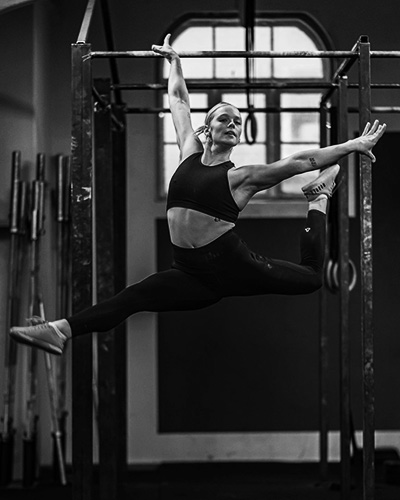
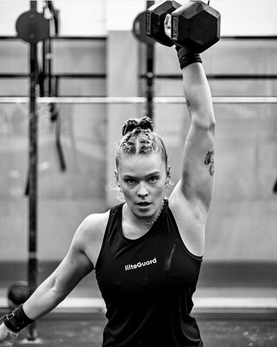

Storytelling
En Crossfit Historie


Begyndelsen
En Atlets Rejse: Fra Gymnastik til Track and Field
Andrea har altid været et
skinnende eksempel på aktivitet
og nysgerrighed i hendes liv.
Hendes rejse begyndte som en ung
gymnast, og hun brugte 11 år på
at udfordre sine grænser inden for
denne disciplin. Men Andrea var slet
ikke færdig med at udforske nye muligheder.
Hendes eventyr førte hende til banen
som en atlet inden for track and field,
hvor hun kastede sig ind i nye udfordringer.
Hendes passion for sport var åbenbar,
men det stopper ikke der.


En Rejse fra Vægtløftningsturneringer til CrossFit Eventyr
En Rejse fra Vægtløftningsturneringer til CrossFit Eventyr
Andrea var ikke kun en udøver, men også en ivrig
deltager i en sportsbutik verdenen, hvor
hun delte sin viden og kærlighed til sport
med andre.
Men det var i 2016, at Andrea virkelig
fandt sin sande kærlighed. Det skete, da
hun overværede en vægtløftnings turnering
(VL), og hendes liv tog en helt ny retning.
Andrea blev øjeblikkeligt grebet af de
forskellige øvelser, der kunne udføres, og
det utrolige fællesskab, der opstod ved at
træne på hold. Dette blev startskuddet til
hendes spændende eventyr inden for crossfit,
hvor hendes lidenskab og engagement bare voksede
sig stærkere for hver løft og hver træning.
Nutiden
Skabelse af Udfordrende og Sjove Træningsplaner
I slutningen af 2016 trådte Christian ind
i en ny dimension af fitness og styrke,
der ville ændre hans liv for altid. Dette
episke eventyr begyndte med en tilfældig
Netflix-dokumentar om CrossFit, der fyrede
op under hans inderste trænings glød og sendte
ham på en utrolig rejse
Christian var ikke tilfreds med at gøre træningen
til en kedelig rutine. Han drømte om at skabe
træningsplaner, der var udfordrende, spændende
og sjove hver eneste gang.